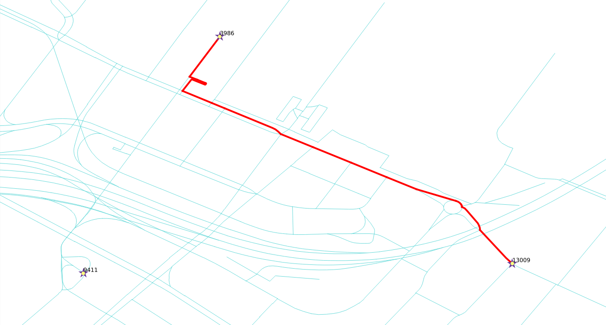
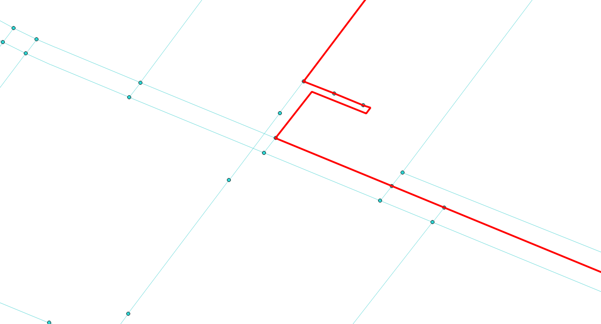
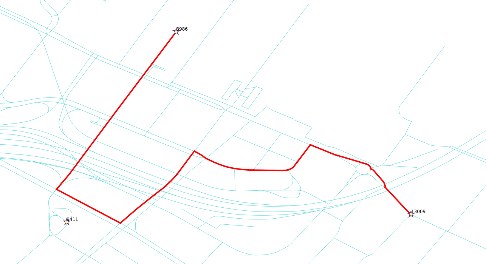

Routing, is not limited to pedestrians and most of the time is used for routing vehicles.
A query for vehicle routing generally differs from routing for pedestrians:
- the road segments are considered directed,
- Costs can be:
- Distance
- Time
- Euros
- Pesos
- Dollars
- CO2 emittions
- Ware and tear on the vehicle, etc.
- the reverse_cost attribute must be taken into account on two way streets.
This is due to the fact that there are roads that
are “one way”.
Depending on the geometry, the valid way:
- (source, target) segment (
cost >= 0 and reverse_cost < 0)
- (target, source) segment (
cost < 0 and reverse_cost >= 0)
So a “wrong way” is indicated with a negative value and is not inserted in the
graph for processing.
For two way roads cost >= 0 and reverse_cost >= 0 and their values can
be different. For example, it is faster going down hill on a sloped road.
In general cost and reverse_cost do not need to be length; they can be
almost anything, for example time, slope, surface, road type, etc., or they can
be a combination of multiple parameters.
The following queries indicate the number of road segments, where a “one way” rule applies:
Number of (source, target) segments with cost < 0
SELECT count(*)
FROM ways
WHERE cost < 0;
Number of (target, source) segments with reverse_cost < 0
SELECT count(*)
FROM ways
WHERE reverse_cost < 0;
From the Venue, going to the Brewry by car.

- The vehicle is going from vertex
3986 to vertex 13009.
- Use
cost and reverse_cost columns, which are in unit degrees.
SELECT * FROM pgr_dijkstra(
'SELECT gid AS id,
source,
target,
cost_s AS cost,
reverse_cost_s AS reverse_cost
FROM ways',
3986, 13009,
directed := true);
Solution to Exercise 7
From the Brewry, going to the Venue by car.

- The vehicle is going from vertex
13009 to vertex 3986.
- Use
cost and reverse_cost columns, which are in unit degrees.
SELECT * FROM pgr_dijkstra(
'SELECT gid AS id,
source,
target,
cost_s AS cost,
reverse_cost_s AS reverse_cost
FROM ways',
13009, 3986, directed := true);
Solution to Exercise 8
Note
On a directed graph, going and coming back routes, most of the time are different.
From the Brewry, going to the Venue by taxi. Fee: $100/hour
- The vehicle is going from vertex
13009 to vertex 3986.
- The cost is
$100 per hour.
- Use
cost_s and reverse_cost_s columns, which are in unit seconds.
- The duration in hours is
cost / 3600
- The cost in
$ is cost / 3600 * 100
SELECT * FROM pgr_dijkstra('
SELECT gid AS id,
source,
target,
cost_s / 3600 * 100 AS cost,
reverse_cost_s / 3600 * 100 AS reverse_cost
FROM ways',
13009, 3986);
Solution to Exercise 9
Note
Comparing with Exercise 8:
- The total number of records are identical
- The node sequence is identical
- The edge sequence is identical
- The cost and agg_cost results are directly proportional

When dealing with data, being aware of what kind of data is being used, can improve results.
Vehciles can not circulate pedestrian ways, likewise, routing not using pedestrian ways
will make the results closer to reality.
When converting data from OSM format using the osm2pgrouting tool, there are two
additional tables: osm_way_types and osm_way_classes:
osm_way_types
SELECT * FROM osm_way_types ORDER BY type_id;
type_id | name
---------+-----------
1 | highway
2 | cycleway
3 | tracktype
4 | junction
(4 rows)
osm_way_classes
SELECT * FROM osm_way_classes ORDER BY class_id;
class_id | type_id | name | priority | default_maxspeed
----------+---------+-------------------+----------+------------------
100 | 1 | road | 0 | 50
101 | 1 | motorway | 0 | 50
102 | 1 | motorway_link | 0 | 50
103 | 1 | motorway_junction | 0 | 50
104 | 1 | trunk | 0 | 50
105 | 1 | trunk_link | 0 | 50
106 | 1 | primary | 0 | 50
107 | 1 | primary_link | 0 | 50
108 | 1 | secondary | 0 | 50
109 | 1 | tertiary | 0 | 50
110 | 1 | residential | 0 | 50
111 | 1 | living_street | 0 | 50
112 | 1 | service | 0 | 50
113 | 1 | track | 0 | 50
114 | 1 | pedestrian | 0 | 50
115 | 1 | services | 0 | 50
116 | 1 | bus_guideway | 0 | 50
117 | 1 | path | 0 | 50
118 | 1 | cycleway | 0 | 50
119 | 1 | footway | 0 | 50
120 | 1 | bridleway | 0 | 50
121 | 1 | byway | 0 | 50
122 | 1 | steps | 0 | 50
123 | 1 | unclassified | 0 | 50
124 | 1 | secondary_link | 0 | 50
125 | 1 | tertiary_link | 0 | 50
201 | 2 | lane | 0 | 50
202 | 2 | track | 0 | 50
203 | 2 | opposite_lane | 0 | 50
204 | 2 | opposite | 0 | 50
301 | 3 | grade1 | 0 | 50
302 | 3 | grade2 | 0 | 50
303 | 3 | grade3 | 0 | 50
304 | 3 | grade4 | 0 | 50
305 | 3 | grade5 | 0 | 50
401 | 4 | roundabout | 0 | 50
(36 rows)
In this workshop, costs are going to be manipulated using the osm_way_types and osm_way_classes tables.
From the Brewry, going to the Venue, vehicle can not take pedestrian roads.

- The vehicle is going from vertex
13009 to vertex 3986.
- The vehicle’s cost in this case will be in seconds.
- Pedestrian ways will not be inserted by setting
cost and reverse_cost to a negative value
- Use
CASE to assign the negative value.
cost and reverse_cost must have the same CASE- There is no need to rebuild the network.
Note
CASE statements are like switch statements in other languages
SELECT * FROM pgr_dijkstra($$
SELECT gid AS id,
source,
target,
CASE
WHEN c.name IN ('pedestrian','steps','footway') THEN -1
ELSE cost_s
END AS cost,
CASE
WHEN c.name IN ('pedestrian','steps','footway') THEN -1
ELSE reverse_cost_s
END AS reverse_cost
FROM ways JOIN osm_way_classes AS c
USING (class_id)$$,
13009, 3986);
Solution to Exercise 10
Note
Comparing with Exercise 9:
- The total number of records changed.
- The node sequence changed.
- The edge sequence changed.
From the Brewry, going to the Venue with penalization.

Change the cost values for the osm_way_classes table, in such a way, that the use
of “faster” roads is encouraged.
- Creating an addition column
penalty
- The
penalty values can be changed UPDATE queries.
ALTER TABLE osm_way_classes ADD COLUMN penalty FLOAT;
-- No penalty
UPDATE osm_way_classes SET penalty=1;
-- Not including pedestrian ways
UPDATE osm_way_classes SET penalty=-1.0 WHERE name IN ('pedestrian','steps','footway');
-- Penalizing with double costs
UPDATE osm_way_classes SET penalty=1.5 WHERE name IN ('cicleway','living_street','path');
-- Encuraging the use of "fast" roads
UPDATE osm_way_classes SET penalty=0.8 WHERE name IN ('secondary','tertiary');
UPDATE osm_way_classes SET penalty=0.6 WHERE name IN ('primary','primary_link');
UPDATE osm_way_classes SET penalty=0.4 WHERE name IN ('trunk','trunk_link');
UPDATE osm_way_classes SET penalty=0.3 WHERE name IN ('motorway','motorway_junction','motorway_link');
- The vehicle is going from vertex
13009 to vertex 3986.
- Use
cost_s and reverse_cost_s columns, which are in unit seconds.
- Costs are to be multiplied by
penalty
- The
osm_way_classes table is linked with the ways table by the
class_id field using a JOIN.
SELECT * FROM pgr_dijkstra('
SELECT gid AS id,
source,
target,
cost_s * penalty AS cost,
reverse_cost_s * penalty AS reverse_cost
FROM ways JOIN osm_way_classes
USING (class_id)',
13009, 3986);
Solution to Exercise 11
Note
Comparing with Exercise 9:
- The total number of records changed.
- The node sequence changed.
- The edge sequence changed.


{kind=link}
{kind=link}
{kind=link}
{kind=link}